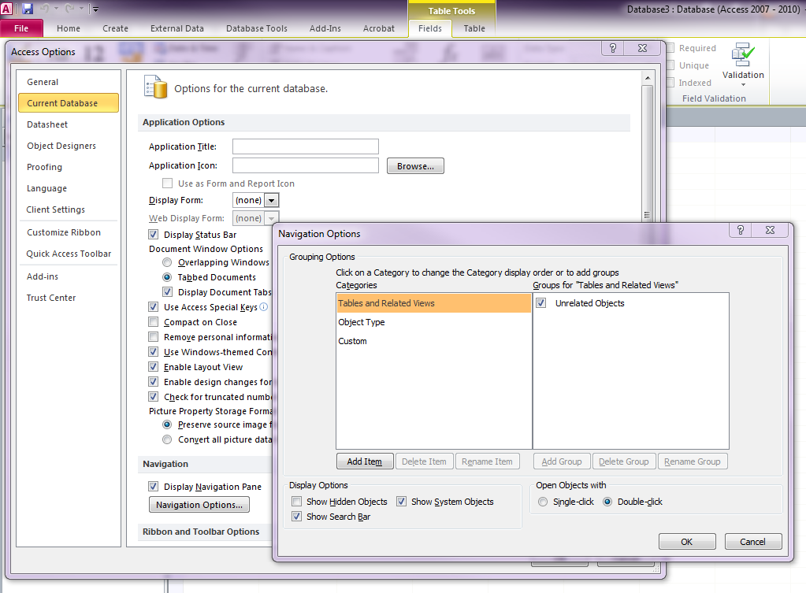
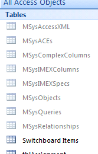

To view the current database System Objects, from the menu select:
File>Options>Current Database>
click the Navigation Options button>under 'Display Options' check 'Show System Objects'.

Now in the Navigation Pane is a list of the System Tables!
For more information refer to LinkedIn Learning:
